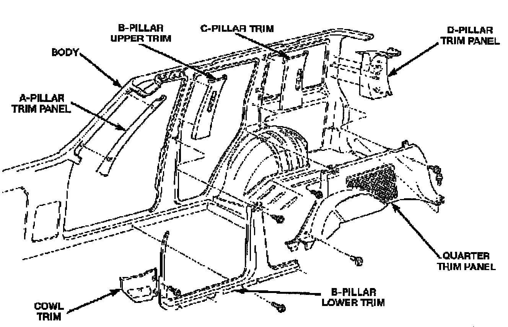

Trim Panel: Service and Repair
A-PILLAR TRIM

REMOVAL
1. Using a trim stick, carefully pry A-pillar trim from A-pillar.
INSTALLATION
1. Position A-pillar trim panel at A-pillar and snap into place.
2. Ensure that the A-pillar covers the inner edge of the door opening weatherstrip.